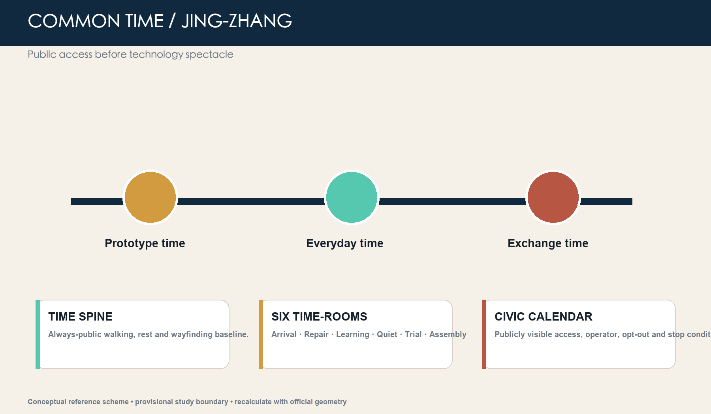
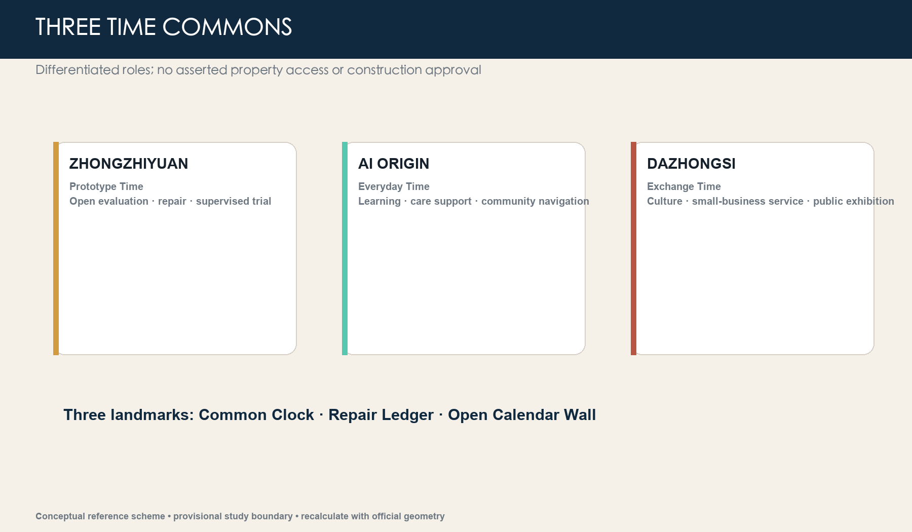
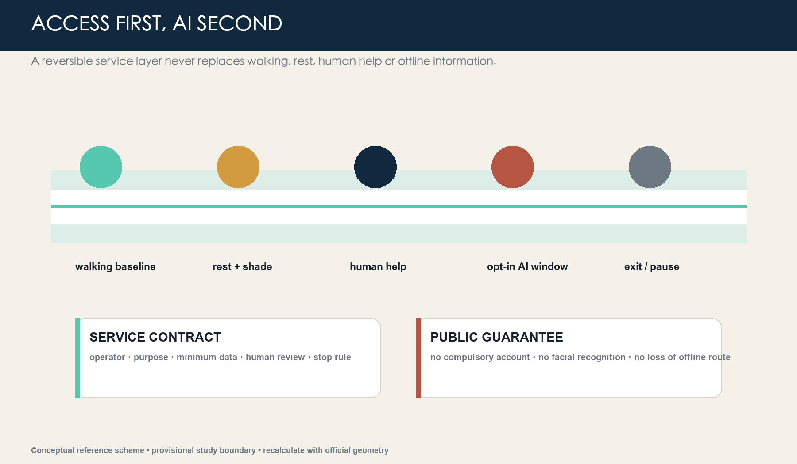

CONCEPTUAL REFERENCE SCHEME · PROVISIONAL GEOMETRY
Jing-Zhang Common Time
Public access and shared civic time—not technology spectacle—are the infrastructure of this AI innovation belt. Every enhanced service remains optional, accountable, reversible and paired with an offline equivalent.
11,412,825 sqm
submitted provisional design boundary
submitted provisional design boundary
12.34%
green ratio
green ratio
7.33%
public-space ratio
public-space ratio
One civic rhythm, three Time Commons


Access first, AI second

All area values derive from provisional geometry and must be recalculated when official geometry becomes available. No diagram establishes ownership, statutory controls, construction approval or operating commitment.
Public safeguards
Always-public route · no compulsory account · no facial recognition · human review · visible opt-out · pause and repair protocol.